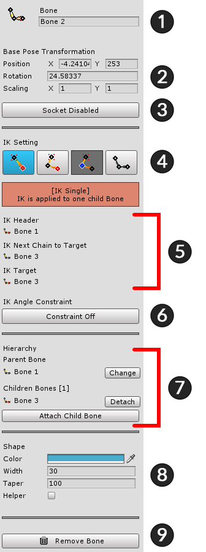
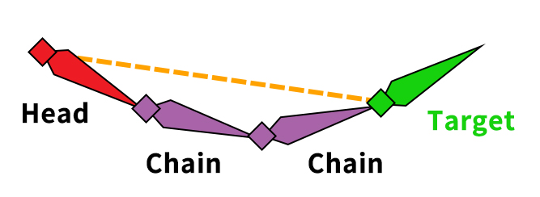
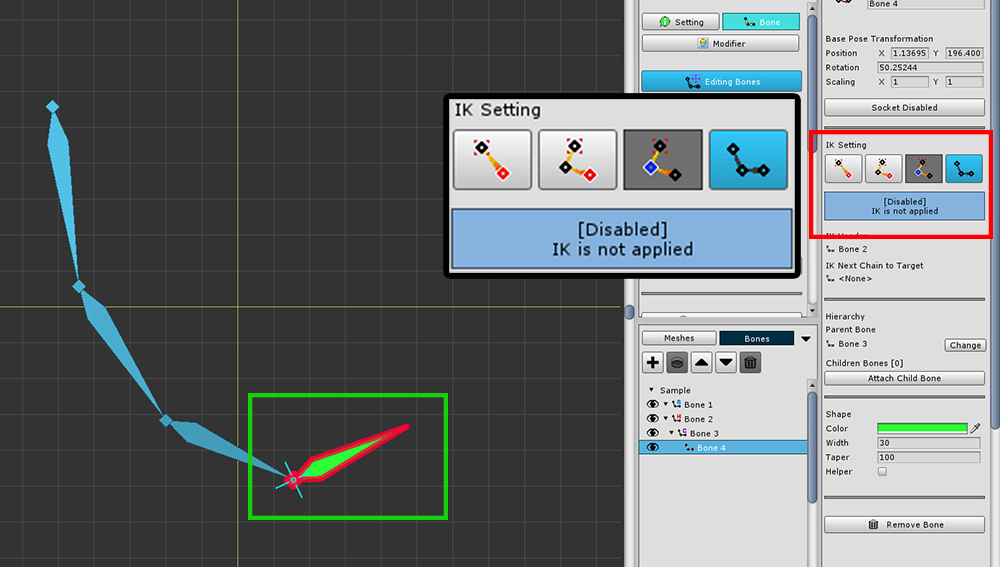
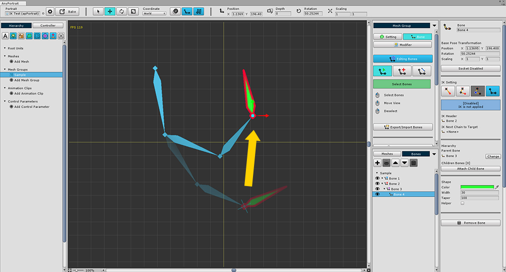

AnyPortrait > マニュアル > 骨のIK設定
骨のIK設定
1.0.0

骨をコントロールするときは、基本的に骨を回転させてコントロールします。
一方、ユーザが1つの骨を動かすと、他の骨が自動的に回転することがあります。
この方法は「IK(Inverse Kinematics)」と呼ばれています。
IKは、直感的なコントロールを可能にします。
AnyPortraitは (1) 「エディタでの編集のためのIKを制御する機能」と (2) 「ゲームで呼び出すことができるIK機能」を提供しています。
このページでは、IK有効とエディタで使用する方法について説明します。
IKが有効になって骨をゲームで使用するスクリプトは、関連ページで見つけることができます。
骨の詳細UI

骨の詳細UIは次のように構成されています。
1. Name : 骨の名前
2. Base Pose Transformation : デフォルトの位置、回転、スケール
3. Socket: ソケットを設定するかどうか
4. IK Mode : 4つのIKモード(Single, Head, Chain, Disabled)の現在のステータス
5. IKチェーン情報: 「IKチェーン」接続情報
6. Constraint : IK角度の限界設定
7. Hierarchy : 骨の親子の接続情報
8. Shape : シェイプとカラーをエディタにレンダリングします。 位置は「Helper」がチェックされているときにのみ表示されます。
9. Remove Bone
「IKチェーン」を作成
このIKの設定を専門的に扱うときは、多くのオプションが必要となり、難しい場合があります。
AnyPortraitはIKを迅速かつ簡単に行うために、「IKチェーン(IK Chain)」と「IKモード(IK Mode)」の方法を提供しています。

IKチェーンの概念図です。
IKチェーンは「Head、Chain,、Target」で構成されます。
IKは「Head」の骨を出発点とし、「Target」の骨の位置まで計算されます。
IKチェーンの場合、骨は4つのIKモードのうちの1つを有する。
1. Single : これは「Chain」なく「Target」のみの「Head」の状態です。これは、子の骨があるすべての骨のデフォルト値です。
2. Head : これはIKチェーンの出発点です。
3. Chain : IKチェーンの中間骨の状態です。「Head」と「Target」の間のすべての骨は、「Chain」モードに強制されます。
4. Disabled : IKチェーンがありません。子の骨が存在しないか、ランダム指定された場合に、このモードが設定されます。

IKチェーンを作成するには、
(1) 骨を選択して、
(2) IKモードを「Head」に変更します。

(3) 「Change IK Target」ボタンを押して、(4) 対象となる骨を選択します。


IKチェーンが作成されると、中間の骨は、自動的に「Chain」モードに変更されます。
ターゲットの骨は、IKチェーンの影響を受けません。
(現在選択されて、骨は、子がないので、「Disabled」モードであり、他の新しいIKチェーンを構成することもできます。)

IKチェーンを使用すると、骨を移動したとき、チェーンの骨が自動的に回転することを見ることができます。
(骨の編集、モディファイヤとアニメーションで確認することもできます。)
IK Angle Constraint(角度制約)

IK計算では、ジョイントに応じて角度を制限することができます。
回転角度を制限する機能を使用する方法は次のとおりです。
(1) 骨を選択します。
(2) 「Constraint」ボタンを押して 「Constraint On」状態にします。

回転限度の範囲を設定します。
「Min」と「Max」の値を使用して限界範囲を設定することができます。
「Preferred」の値は、IKの計算式の基礎となる角度です。
角度制限がある骨を画面上で直感的に見ることができます。

IK角度の制約が動作するのはモディファイヤやアニメーションで見ることができます。
(注：回転変形値を制限する機能であるため、メッシュグループの「Bone」タブの画面では、テストすることができません。)
モディファイヤやアニメで作業するとき、上記の画面のように角度制限IKが実行されることを確認することができます。
この設定は、ゲームにも適用されます。
IKなしの骨

IKを適用しない場合があります。
以下の場合、親骨はIK連鎖関係には関係しません。
- 親の骨がない場合
- 親骨が「Disabled」モードにある場合
- 親骨がIK鎖を有するが、別の子骨に標的化されている場合
上の写真は、親骨がIK鎖を有するが、IK鎖が他の子供骨のために形成されるため、IK鎖が形成されないことを示している。

IKが設定されていない場合、親の骨は回転しません。